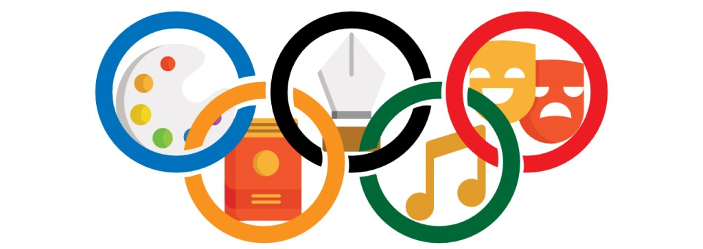

Hobbies y Actividades
Desde muy pequeña me he considerado una persona bastante activa y dinámica, me gusta probar cosas nuevas, aprender nuevas habilidades, y desafiarme a mí misma día con día. He formado parte de un sinnúmero de eventos y actividades diversas, destacando entre ellas:
- Cultura
- Arte
- Deporte
Aunque muchas de estas actividades las he dejado con el transcurso del tiempo,
también han ido surgiendo nuevos hobbies y actividades de interés.
Actualmente la habilidad que más destaca en mí es la fotografía, permitiendome
incluso desempeñarme de manera profesional.

| Tipo | Actividad | Descripción | Imágenes |
|---|---|---|---|
| Cultural | Ballet | ... | ... |
| Deporte | Natación | ... | ... |
| ... | Scouts | ... | ... |
| Cultural | Danza | ... | ... |
| Deporte | Volleyball | ... | ... |
| Artístico | Coro | ... | ... |
| Deporte | Fútbol | ... | ... |